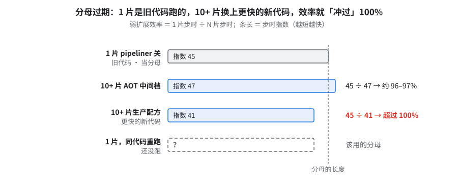
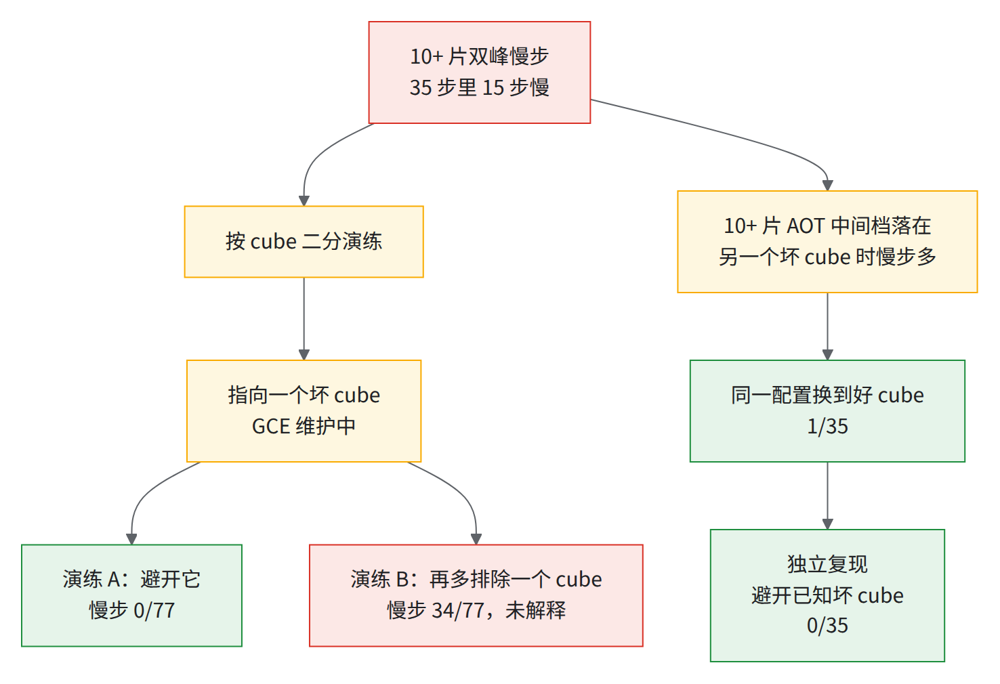
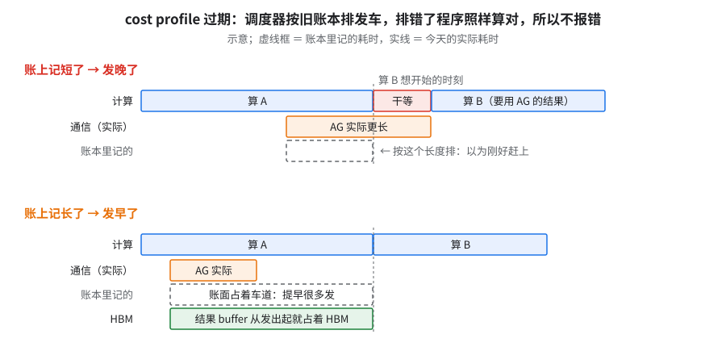
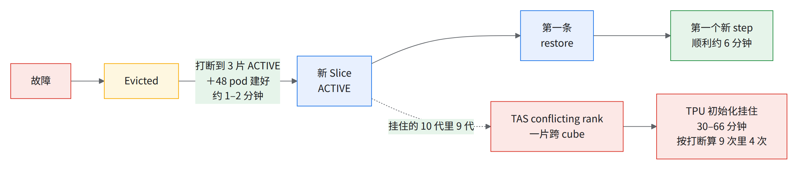
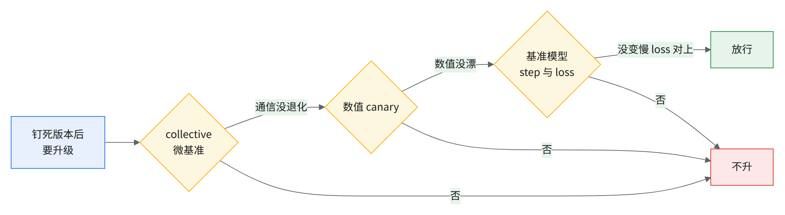
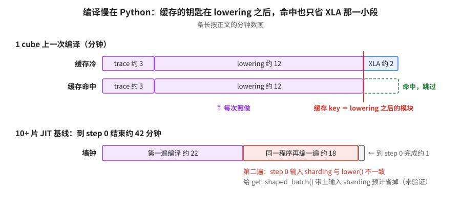
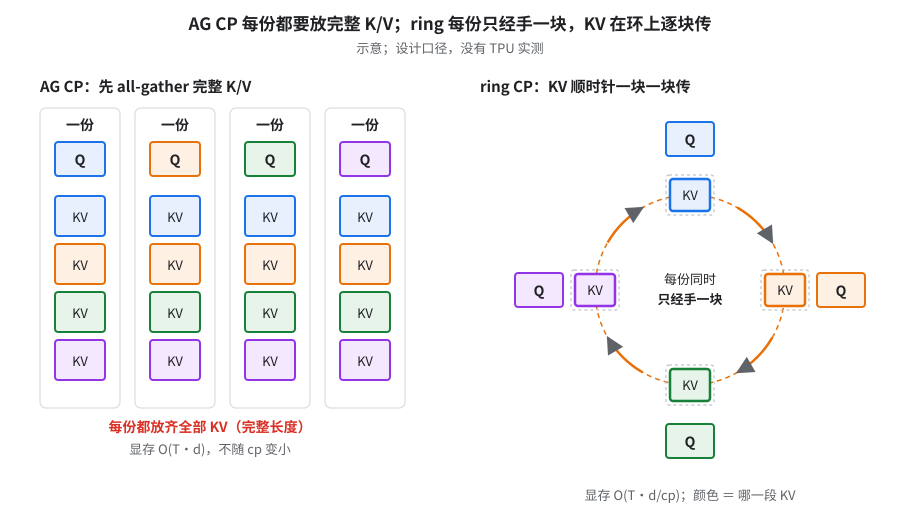
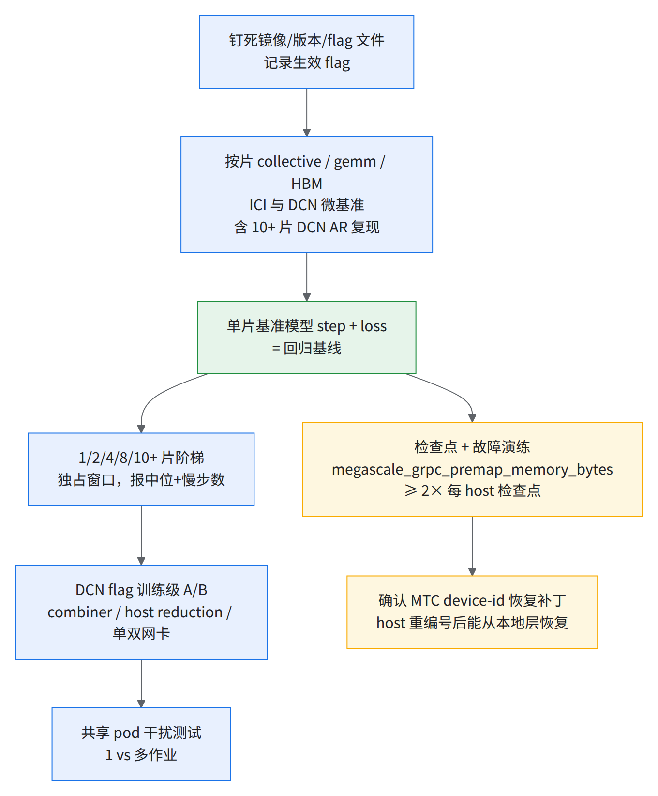

08 · 未解决问题：下一个集群的实验清单
要解决的问题：前七章把大号模型 1 片调到指数 37、10+ 片调到指数 41，还有一批问题没弄清。换到下一个集群，先做哪几个实验最值？
直觉：最该先查的，是「换个集群还会再碰上、而且一碰就影响整个作业」的问题。
- 最该先查的四件事都和跨片网络或编译器排程有关（总表第 1–4 行）：DCN 弱扩展、双峰慢步、跨片 all-reduce 只到线速三成多、编译器排程用的耗时表（cost profile）过期就变慢。
- 下一步：在多片上单独采一份 cost profile；把 10+ 片 AOT 中间档里的几项改动拆开，各量一次贡献。
有证据的先后关系只有一条：先排除坏 cube，双峰慢步才能定性（§2）；双峰不排除，弱扩展的数站不住（§1）。其余各条可以并行查。
- 指数 37 1 片满配复现，与原测差不到 1%
- 指数 47 10+ 片 AOT 中间档，独立复现过
- 指数 41 10+ 片生产配方（换 10+ 片自己的 cost profile）
- 约 100% 10+ → 20+ 片弱扩展 [推断]
- 11–14 分钟 上 MTC 后 11 次注入故障的恢复时间（20+ 片一次约 22 分钟）
- 71–82% DCN 弱扩展，JIT 口径
- 约 96–97% 10+ 片 AOT 中间档（pipeliner 关）[推断；分母已过期，见 §1]
- 11 条未解决问题
排序总表
ℹ️背景表为阶段性快照。01–07 的「还没解决」（04 是 §11）按对整 pod 的影响 × 能否在另一个集群上先验证排序。
| # | 问题 | 核心证据 | 换个集群还成立吗 |
|---|---|---|---|
| 1 | DCN 弱扩展 JIT 口径 71–82%，目标 90% | JIT 71–82%；AOT＋HLO 通信重排下 10+ 片约 96–97% [推断]，但分母已过期。各口径见 §1 子表 | 高：任何整 pod 作业都要跨 DCN |
| 2 | 10+ 片双峰慢步（约 45% 的稳态步慢 40–85%） | step 15–49 共 35 步：20 步指数 70–73，15 步指数 97–130，成片出现 | 高：共享 pod 的常态 |
| 3 | DCN all-reduce 只到线速三成多；21 ms 地板（单独发起一次，含 Python 派发、取数百个进程里最慢的；同一程序里串行摊下来约 9.6 ms/个） | 146 vs 365 Gbps/host；28 个 AR 合并后快约 2.7 倍 | 高 |
| 4 | cost profile 会过期 | 过期慢约 20%；只换 profile 快约 7% | 中：限 HLO 通信重排；但调度对输入敏感普遍 |
| 5 | RS 吞吐约为 AG 六成（整张量字节÷耗时）；kernel 快了 step 不快 | asymmetric loop 让 RS kernel 变快，step 基本没变（略慢不到 1%，非单变量）；RS 快多少有三个口径，对照见 §5 | 中高：FSDP 大专家都碰 tile 规则 |
| 6 | 故障恢复不稳定 | 9 次打断（07 §6.1）：顺利约 6 分钟；4 次挂住 30–66 分钟；上 MTC 后见 §6 | 高 |
| 7 | 检查点失败 exit 0 | JobSet Completed，0 步 0 检查点 | 看实现：只在把检查点错误包成 StopTraining 的实现里；上游 maybe_save_checkpoint 抛 RuntimeError、非零退出（§7） |
| 8 | HBM 余量 = 调度余量（只在调度器因显存不够而没法提前发通信时成立，§8）；libtpu 升级多占一截 HBM | 存得多反而慢；0.0.48 logits 存活期拉长 | 高 |
| 9 | 数千芯片的编译：JIT 首步编两遍，大头在 Python trace / lowering | 约 42 分钟 ＝ 第一遍约 22 ＋ 第二遍约 18 ＋ 到 step 0 完成约 1 分钟；step 0 自报的约 18 分钟只是后一段 | 高 |
| 10 | FP8 精度未闭环、与 EP>1 不兼容 | LM loss 高不到 0.1%（informational）；QAG 需 shard_exp_on_fsdp |
低（新集群先 BF16 跑通；FP8＋QAG 性能上该做，精度闸自定），QAG 思路可借 |
| 11 | 长上下文混合 CP（KDA 层 AG、MLA 层 ring）没上卡 | 设计目标：MLA 层每个分片要放的完整 K/V 及其梯度缓冲 O(T·d) → O(T·d/cp)（§11）；无 TPU 实测 | 中：只在超长上下文、混合注意力时相关 |
表里的缩写：片 / DCN / ICI、JIT / AOT、HLO 通信重排 / placement、cost profile、pipeliner（开 / 关）、HBM、MTC、QAG、EP 见 README 术语速查；另有：
- AR / RS / AG：all-reduce / reduce-scatter / all-gather 三种集合通信。
- CP：上下文（序列）并行。KDA / MLA：模型里的两种注意力层（线性注意力 / 多头潜在注意力）。
- 指数：大号模型单片 BF16 最初基线步时 ＝ 100，越小越快（口径见 09 §1.2）。
1.DCN 弱扩展：JIT 71–82%，AOT + HLO 通信重排下 10+ 片约 96–97%
同一模型换编译口径，弱扩展差 25 个百分点左右。每个数只在自己那一行的口径里成立：
| 口径（大号模型，除注明外） | 效率 | 出处 |
|---|---|---|
| JIT 阶梯：1 片指数 51 → 2 / 4 / 8 / 10+ 片指数 64–66 / 62 / 65 / 71 | 78–79% / 82% / 78% / 71%，大头在 1 → 2 片 | 09 §7.1 ＋ JIT 试验配置（未进阶梯） |
| 10+ 片 JIT 基线（指数 71）对 1 片（51） | 71% | 03 §16 |
| JIT 其余数据点 | 72–80% | JIT 试验配置（未进阶梯） |
| AOT，pipeliner 开 → 关（2 / 8 片） | 71% / 67% → 96% / 90% | 09 §7.1 |
| AOT＋HLO 通信重排，10+ 片 AOT 中间档 / 独立复现对 1 片 pipeliner 关（指数 45） | 97% / 96%；分母已过期（1 片是旧代码） | 下文 [推断：1 片 pipeliner 关 步时 ÷ 10+ 片中位] |
| 同代配置 1 → 10+ 片 | 83–87% [推断] | 03 §16 |
| 10+ → 20+ 片 | 约 100% [推断] | 下文 |
| 小号模型 1 → 2 片 | 80% | 03 §16 |
- 结论：把单片的 AOT＋HLO 通信重排配方搬到 10+ 片，跑到指数 47，比 JIT（指数 71）快约 35%。
- 独立复现跑出同一水平（03 §8）。
- 效率是推断（两边代码、配置、profile 都不同）。
- 10+ 片生产配方到指数 41（长跑全程中位 42；RS 双 SC＋同配置自己抓的 10+ 片 profile，03 §9），1 片关 pipeliner 的分母随之过期，要同代码重跑 1 片：

读图：右边两个比值都除以第一条的旧分母，该用的是最底下那条。
- 大号模型裁剪版（同结构、缩小规模）的弱扩展是建模估算，94–98%（非实测）。
- pipeliner（FP8 配方）：1 片上关掉慢约 25%，多片上关掉反而快约 9%（09 §4.1、02 §16）。
- 20+ 片和更少片：
- 20+ 片 0–737 步 p50 指数 41，10+ 片 MTC 长跑也是 41，约 100%；两者代码版本是否相同未核，profile 仍是 10+ 片那份。[推断：两者步时相除]
- 4 / 1 片：4 片指数 39；1 片 CI 每日跑的步时为指数 36（见 01）。4 → 10+ 片约 94%、1 → 10+ 片约 87% [推断：步时相除；1 片代码配置都不同]。
- DCN all-reduce 外提：把层循环里的 DCN all-reduce 外提到循环外的一版，cost model 估层循环和跨片桥接段都明显缩短；只跑过短程（指数 45），说明不了效果。
- 多模态版移植的两条 DCN 编译 flag（即 03 §8 那两条 LIBTPU flag）没上卡验证，没有步时；文本版 10+ 片配方里这两条已默认写死（12 §3.4）。
- 还不知道：独占窗口重复性（每档 1–2 个样本）；10+ 片 AOT 中间档里各项的单项贡献；10+ 片生产配方里更新的代码、双 SC、真实数据、检查点各值多少；十几小时长跑里步时从指数 41 漂到 44 的原因。
✅第一个实验生产模型跑 N = 1、2、4、8、10+ 片阶梯，同镜像、同 flag 文件、独占窗口；每档报中位 + 慢步数。 芯片总数相同时，优先用少数大切片，不用多数小切片。
2.双峰慢步

独立复现的 10+ 片中位与 10+ 片 AOT 中间档（47）差不到 1%（一个样本），支持「坏 cube 是主因」；多排除一个 cube 那组的 34 个慢步未解释（03 §19）。
为什么：一块坏 cube 卡几秒，全作业这一步就慢几秒。 每步末尾的跨片规约要等最慢那片到齐（见下方动图）。
把握：推断 · 出处：本节流程图与 03 §14；DCN 干扰这条候选还没排除，判据见下面的 TIP。

读图（示意）：只有慢片卡顿，其余片在浅红里干等；底下步时分成两堆。
- 证据：10+ 片 JIT 基线（HLO 通信重排关）慢步成片。重跑 10+ 片 DCN 集合通信合成基准时，另一个 10+ 片作业正共享 DCN；这时 64 MiB 基准也双峰（7 个 154–158 ms、13 个 180–236 ms）。
- 候选 [推断]：DCN 干扰；慢 slice 拖全体；profile 窗口残留。
- 10+ 片 JIT 基线那组与另一个同规模作业同时在跑，两个 数千芯片作业互相干扰；10+ 片 AOT 中间档慢步多时有 16 个节点落在另一个坏 cube 上（03 §14）。
✅第一个实验独占重复 10+ 片 JIT 基线 ≥2 次；双峰消失 → 干扰；仍在 → 按 slice 拉
collective_end_to_end_latencies/dcn_transfer_latencies/ H2D-D2H 找 pacer。 另做：1 vs 3 作业、作业 + DCN 压测。
3.DCN all-reduce 带宽与地板
- 证据：裸
ppermute365 Gbps/host（约 90% 线速），AR 146 Gbps；地板 ≈21–22 ms（10+ 片 DCN 合成基准）。- 146 Gbps 是在 2 片上量的（DCN 方向只有 2 个参与者）。ring all-reduce 的总线带宽 = 算法带宽 × 2(n−1)/n，n=2 时系数正好是 1，所以这里两种口径同值；拿别的片数比时要先换算 [推断]。
- 杠杆：把小 AR 合并成大包（合成基准里 28 个 AR 合并后快约 2.7 倍）；libtpu combiner 设 1 GiB，在 2 片大号模型 JIT 上快约 10%、HBM 84 → 91 GiB（03 §5）。
- 另两个 flag：
prefer_async_allgather_to_allreduce（小号模型 DP2 快约 20%）；megascale_lower_all_reduce_to_all_gather_threshold=64 MiB（快 1–2%，在噪声里；没进默认配置）。 - 关 host reduction + 16 MiB shard：微基准 162 → 331 Gbps，训练里却慢约 10%。
- 为什么 AR 只到线速三分之一出头、为什么微基准快了训练反而慢：见 03。
✅第一个实验先复现 10+ 片 DCN 合成基准，再对 host reduction flag 做训练级 A/B；
--megascale_grpc_*放LIBTPU_INIT_ARGS（写成环境变量不生效）；单/双网卡各测。
4.cost profile 敏感性
- 证据：过期 profile 对换新 profile 慢约 20%（两边源码 / libtpu / pass 均不同，不是同一张图；迭代不单调）；同一份源码只换 profile 快约 7%（单项 A/B）；record/replay 因名字变化失败。
- 10+ 片上也成立：只换 profile 快约 10%，cost profile 未命中计数降到一半以下；RS 没变快，变的是排位（03 §9、09 §7.3）。
- 换到上游 MaxText：没有 placement，变成「XLA 自带的延迟隐藏调度器（LHS）对 flag / 版本敏感」。
为什么：编译器拿旧账本排队：账上记的耗时和今天对不上，排出的发车时刻就错了，但程序照样算对，所以不报错。 记短了晚发，TensorCore 干等；记长了早发，白占显存和车道（每颗 SparseCore 同时只跑一个通信，见下图）。
GPU 上相当于：JAX GPU 的 PGLE 拿过期的 profile 喂调度器（类比）。
把握：源码证实 · 出处：02 细粒度调度与 cost profile 一节。

读图（示意）：每组比虚线框（账本）和实线框（今天）。
- 1 片上拆开量过（1 片 AOT 逐个关 pass 的阶梯 + knockout，09 §4.3）：placement 约 10%（约 5 个指数点；其中 placement 搜索约 4 点、反向 while 流水约 2 点，两项有重叠，相加多于整体）；小 RS 合并 / two-stage RS 的收益方向随其他开关变化。失配伤的是 placement 及 pipeliner 搭配收益。
✅第一个实验每次升级后固定基准跑 3 次取中位，记录编译指纹；profile / flag 变了是回归一号嫌疑。
5.Reduce-scatter 天花板
- 证据：ND 是 SparseCore 上 RS 的多维路径，8×128 tile 数是 6 的倍数才走 ND；三件套（RS v2、ND、padding 三个 flag，11 A06）让单个大 RS 快约 20%；asymmetric loop 再快约 25%（不拆的整块 RS、微基准；对两段式拆过的 RS 只快约一成），已默认开、libtpu 钉 0.0.48（11 A07）。
- 三个数说的是同一件事，口径不同：
- 换模型时：专家形状不同，先算最大 RS 张量是否满足 tile 规则。
- asymmetric loop 本身的实现机制未公开（09 §4.7）。
✅第一个实验最大几个 RS 形状跑微基准，RS/AG 吞吐比 < 0.6 就试三件套与 two-stage。
6.故障恢复闭环

读图：
-
「约 1–2 分钟」是 9 次打断各自「打断 → 3 片 ACTIVE、48 pod 建好」的范围；07 §6.1 表只拆了顺利的 3 次。
-
两个分母：20 代 pod 里 10 代挂住（一「代」＝JobSet 重建一次的一整组 pod），其中 9 代是 TAS rank 冲突、一片跨 cube；按打断次数是 9 次里 4 次（07 §6.1 口径）。报错见 07 §6.1。
-
上了 MTC 以后（详见 07 §6.2、07 §13 第 7、8 条）：
- 注入 / 非注入的恢复耗时见 07 §6.2；20+ 片一次约 22 分钟。
- 没再出现 30–66 分钟的挂住，但条件不同，不能说已解决；自动只换部分片只有 2 次，按全部重切估上限。
- slice
FAILED9 次（MTC 作业 4 次）；7 / 8 次 exec kill 后报CHIP_DRIVER，与真实节点故障同一个错 [推断：按注入时间对齐]。
-
为什么期望恢复时间被挂住主导、片数越多越要压恢复时间（badput ≈ √(2δ/M) + R/M），见 07 §6 开头与 07 §9。
✅第一个实验重做故障演练，记录图中五个时间点； 抓旧 pod 是否退净、replica 是否在同一 4x4x4 分区；先
ulimit -c 0。验收以「第一个新 step」为准。
7.exit 0 伪装成功
- 证据：实现里把检查点错误包成 StopTraining 才变成 exit 0，上游会非零退出；现行实现改抛一个自定义检查点异常，进程非零退出（07 §8）。
- 第二条成因：抢占信号也会变成 exit 0（小号模型故障注入可复现；生产配置下因 fast-kill 未触发，见下）。
- 链条：SIGTERM 送到 Python → 进程 exit 0 → JobSet 判
Completed→ 训练静默永久停。 - 为什么现在没炸：节点走 fast-kill，宽限期 0，SIGTERM 直接换成 SIGKILL，进程来不及走到 exit 0。代价是抢占时那次存盘从来没触发过。
- 雪上加霜：当前存档策略只按固定间隔存（
FixedIntervalPolicy），不含「任一条件满足就存」（AnySavePolicy）里的抢占触发，所以抢占时本来就不会存盘。 - 修法：抢占退出码改成非 0（选的是
exit 3），JobSet 侧配podFailurePolicy按这个码判「可重试」；同时把抢占存盘接回存档策略。这条修法还没进生产配置。 - 坑：哪天把 fast-kill 宽限期调大，SIGTERM 真送到 Python，就会立刻撞上 exit 0 → Completed。宽限期和退出码要一起改。
- 链条：SIGTERM 送到 Python → 进程 exit 0 → JobSet 判
⛔第一个实验（其实是一条告警）JobSet
Completed但completed step:计数 < STEPS，或出现/local/replicator.failed/StopTraining→ 告警。
8.HBM 与版本
- 证据：libtpu 0.0.48 多占一截 HBM，快约 15%（单次）；0.0.48 在 2x4x4 上 AG 耗时减半。
为什么：通信提前发，就要提前占一块显存放结果；显存不够，调度器只能晚发，等待就露出来（见下方动图）。这只在 overlap 受显存约束时成立：瓶颈在计算、DCN 带宽或串行依赖时，加显存换不来速度；本书也有多存却没变慢的反例（05 §2「不成立的情况」）。判据：看 profile 里通信是不是在等前一个 buffer 释放才发。
GPU 上相当于：FSDP（v1）的
limit_all_gathers=True，只许预取下一层的 AG、显存里最多同时住两层，拿提前量换显存（类比）。

读图（示意）：下组每个 AG 都排在上一块绿条结束之后，红色干等就露出来。
- 多模态版 FP8（2 片 512 芯片 AOT）OOM，只差约 10 MB（04 §10、06 §7）[推断：两数保留两位，实际差 0–20 MB]。1 片、10+ 片都已跑出稳态步时（12 §1）——说明显存贴边，不是 FP8 跑不了。

✅第一个实验钉死 jax + libtpu + MaxText + 镜像 digest；升级过三道门。记 memory report 与 XProf 峰值，别用 logical 数。
9.大规模编译时间
- 证据：
- 10+ 片 JIT 基线到 step 0 结束约 42 分钟，1 cube 上一次编译 trace 约 3 ＋ lowering 约 12、XLA 只约 2 分钟（见下图）；第二遍是因为 step 0 输入 sharding 与
lower()不一致。 - 大号模型 256 芯片 CPU AOT 约 66 分钟；冷编译约 5 分钟，命中缓存约 1 分钟。
- 10+ 片 JIT 基线到 step 0 结束约 42 分钟，1 cube 上一次编译 trace 约 3 ＋ lowering 约 12、XLA 只约 2 分钟（见下图）；第二遍是因为 step 0 输入 sharding 与
为什么：缓存的钥匙是 lowering 之后的模块，要拿钥匙就得先把 trace 和 lowering 跑完，所以命中也只省 XLA。对账：1 cube 上缓存冷约 33 → 热约 28 分钟，省约 5 分钟，大体就是两次 XLA 编译（2 × 约 2 ≈ 4 分钟），剩不到 1 分钟没拆 [推断]。
把握：源码证实 · 出处：JAX
jax/_src/cache_key.py的get()拿 lowering 后的ir.Module（连同 devices、编译选项、backend）算 key，由compiler.compile_or_get_cached在 lowering 之后调用（本地 jax 0.11.0 核过）；省下的时间与两次 XLA 编译的对账是推断，判据是缓存命中时 trace、lowering 分段计时。编译路线见 06 §8

读图：红线左边命中也照做；下半中间那段红是能省掉的第二遍。
✅第一个实验给
get_shaped_batch()带上输入 sharding，省掉第二遍（预计省约 18 分钟，未验证）；评估 CPU AOT，加配置指纹断言（有设计，没进生产）。
10.FP8
- 证据：04。收益主要来自 QAG。几个数的口径不同，不能互相比：
✅换集群时先 BF16 跑通，FP8＋QAG 性能上该做、精度闸自定。评估 FP8 先查 QAG 与静默退回 BF16（HLO 看
f8e4m3fn）。 精度闸的步骤：功能闸、loss 闸、故意喂坏 run 看闸响不响，见 04 §11 的 TIP；门槛怎么定（先量参考噪声、TPU 自身逐位复现、signed 与 MARE 同报），见 12 「怎么定对拍门槛」。
11.长上下文混合 CP（未实测）
- 做了什么：接入 Tokamax ring attention，开「混合 CP」：KDA 层保持 all-gather CP，MLA 层改走 ring（
ppermute逐块传 KV），用一个自研配置项把 MLA 层的 CP 策略单独设为 ring，另加上游的ring_scan_unroll控制 ring 循环展开。目标是超长上下文（示例配置 256K、CP=8）。 - 这是设计稿的示例配置，不是生产选择。线性注意力 CP 的现行判据：8K 的 CP>1 统一用 AG；256K 配置保留 a2a，改成 AG 的版本未进生产；大号模型生产
ICI_CONTEXT_PARALLELISM=1，配置里的 a2a 不起作用（详见 11 B04）。 - 原理：
- splash / flash 这类分块 attention 本来就不会把 T×T 的分数矩阵整个放进显存，所以省的不是 T² 那一项。
- AG CP 每个分片要先 all-gather 完整长度的 K/V（反向还有完整的 dK / dV 累加缓冲），显存 O(T·d_kv) 不随 cp 变小；ring 每次只经手一块 KV，降到 O(T·d_kv/cp)（见下方动图；上游 MaxText
attention_op.py注释写的就是这个区别）。 - KDA 是线性注意力，AG 的代价是递推状态，不是完整 K/V，所以不动。

读图（示意）：左边每列放齐全部 KV，右边每份手里只有一块。
- 效果：没有 TPU 实测，未进生产。只有设计口径。
- 坑：
- ring 路径不支持
record_max_logits，开它就必须关 QK-Clip——对依赖 QK-Clip 稳定训练的模型这是硬代价。 - ring 路径不支持 CP 负载均衡（causal 下各分片工作量不均，11 C06 那套 zigzag 用不上）。
- 该路径没有测试覆盖，接入时要修一处变量引用错误（
context_parallel_size缺self.）。
- ring 路径不支持
✅第一个实验256K 上 AG CP 对混合 CP：比峰值 HBM 和步时；QK-Clip 关掉后 loss 曲线单独看。
⚠️MFU 只能在同一模型、同一口径里横着比分子是框架按各模型公式估的 FLOPs，KDA / MLA 各走各的分支、漏得不一样（KDA 块内求逆、Q/K L2 norm 都没计；L2 norm 约占核心不到 1%、整层 <0.1%）；分母口径见 01 §3 的图。跨模型比步时、tokens/s/device，或用同一公式重算两边 FLOPs。
附：换到新集群的「第一周」顺序 [推断]

排序只守一条：每加一个变量之前，先有一个不含它的对照。
附：第一周就要做的——别信平台的 HEALTHY
上规模后反复出现：节点坏了，平台仍报 HEALTHY——它只说明节点活着，不说明快不快、算得对不对。
| 例子 | 平台怎么说 | 实际 |
|---|---|---|
| 一台主机电源读数异常导致限频 | HEALTHY | 片内 all-reduce 慢 十几倍；比 10+ 片小的另一个多片配置上的作业步时慢约 20 倍，cordon 4 个 cube 后基本恢复（仍慢不到 10%） |
| 一个 cube 两个端口报 fatal ICI link | HEALTHY | cube 内 all-reduce 慢约 25% |
| 节点已判 UNHEALTHY | GKE 健康状态晚约 3 h 才跟上 | 这 3 h 里调度器照样往上排作业 |
| 首个 batch 超时后出现坏芯片 | 池标签没变 | 约一半节点报 MegascaleHangDetected，状态没同步到 GKE 标签；作业 0 步 |
| 已排了计划外维护 | 仍显示健康 | — |
监控指标恒为 0、读不到序列的同类问题见 13 §2.5。
- 做法：
- 按片跑微基准：collective（片内 AR）、gemm、HBM 带宽各一个，和同型号其它片比；慢的那片直接 cordon。
- cordon 二分：步时整体变慢又找不到哪片时，cordon 一半 cube 重跑，二分到具体 cube。
- 按节点筛，不信池标签：开跑前自己出一份黑名单。
- 平台把限频等纳入自动检测之前，自己跑 gemm / HBM 长测兜底。
⚠️交付时「健康但有待办」的机器，就是下一周最可能出事的名单 [推断：4 例，样本小]
- 交付时还有未完成维护的几个 cube，交付后第一周：一个反复复发（步时慢 2 倍到 40 倍以上）；一个 ICI 降速约 25%；一个交付前就有过 2 h 同样的限频，交付后又限频；一个排空卡了很久、一直拖到交付后。
- 修回准入只 soak 60 min 不够：上面反复复发那台，修回后 soak 通过，1.5 h 后又坏。
- 反复复发就要求换件，不接受只做重新检查 [推断]。
- 做法：交付验收把这类 cube 单独长测（≥ 数小时），或先不放进生产池。
附：尚未闭合的验证项
下表的缺口来自四组验证：JIT 消融阶梯、1 片 AOT 阶梯 + knockout、真数据 loss 对拍、10+ 片 AOT 中间档的独立复现。
| # | 还开着的 | 现在知道的 |
|---|---|---|
| A | 10+ 片复现里另编 AOT 产物（pickle）的那一路没出步时 | 与生产 pickle 逐字节相同；未上卡，无步时（03 §8） |
| B | 10+ 片 profile 重编版 | 未上卡，无步时（03 §8） |
| C | 16 片关 pipeliner 没数；多片各配置都没开 profiler | pipeliner 关快 9%，慢在哪只能从多片编译 temp（pipeliner 开约 93 GiB、离 94.74 GiB 上限约 1–2 GiB，pipeliner 关低约一成；单片开关两边差不多）推 |
| D | 带 DCN 的多片 cost profile 只在 10+ 片关 pipeliner 的配置上用过 | 快约 10%，到指数 41（03 §9、09 §7.3）；独立复现没跑，pipeliner 开下还没试 |
| E | 「profile 换回旧版」那级没跑 | 单项 A/B 快约 7%（09 §3.2 读法框） |
| F | JIT 阶梯拆到 GMM tile / Splash / SC RS v2 / GMM v2 都关的几级异常（每步慢到同一 JIT 对照正常步时的约 13 倍，只 10 步） | JIT 口径这一段无数；1 片 AOT 阶梯已补 |
| G | Muon 批量 temp 阶梯与 knockout 相反（阶梯里批量版省 temp、knockout 里批量版反而多占一截） | 步时同号（+1–2% / +3%） |
| H | 只关 QAG 那份 temp 超 94.74 GiB 上限却跑通 | 已核对：temp 高估一截，实机峰值约 89 GiB（06 §10.3） |
| I | 阶梯拆到 GMM tile 那一级时 SMEM 溢出，阶梯停在它前一级 | 步时拿不到；GMM v2 → v1 那级 CPU 上也编不了 |